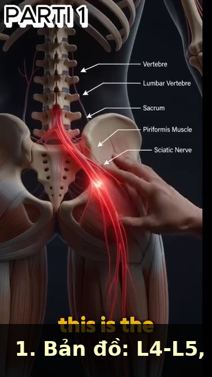
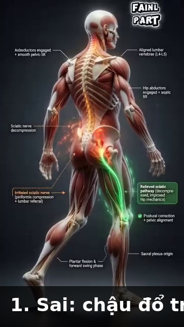

Thân & Cột Sống¶
L4-L5, Piriformis, the 40 Muscles of the Back in 3 Layers, and Why the Hip Hinge Saves Your Spine¶
📋 DOCUMENT MAP / BẢN ĐỒ TÀI LIỆU¶
| Thân là cầu nối giữa thân dưới và thân trên trong chuỗi động học. Cột sống là cột trung tâm. Lưng có hơn 40 cơ xếp 3 lớp. Đĩa đệm L4-L5 và L5-S1 chịu tải nhiều nhất. Hip hinge là chuyển động BẢO VỆ cột sống. |
| Nội dung: cột sống thắt lưng (L1–L5, xương cùng), 3 lớp cơ lưng (nông, giữa, sâu), hip hinge vs gập cột sống, vì sao hội chứng piriformis chẩn đoán sai 80%, sciatica vs đau cơ, và phác đồ "giải nén bằng đi bộ." |
| Không bao gồm: vai (DD2), tay (DD3), hông chi tiết (DD5). |
| Thời gian đọc: 35–45 phút. |
📑 TABLE OF CONTENTS / MỤC LỤC¶
| # | English | Tiếng Việt |
|---|---|---|
| 1 | The Lumbar Spine — 5 Vertebrae, 2 Discs That Matter | Cột Sống Thắt Lưng — 5 Đốt, 2 Đĩa Quan Trọng |
| 2 | The 3 Layers of the Back — 40+ Muscles, 3 Jobs | 3 Lớp Cơ Lưng — Hơn 40 Cơ, 3 Việc |
| 3 | Hip Hinge vs Spine Hinge — Why the Hinge Saves Your Back | Hip Hinge vs Gập Cột Sống — Vì Sao Hip Hinge Cứu Lưng Bạn |
| 4 | The Piriformis Trap — Why 80% of "Piriformis Syndrome" Is Wrong | Cái Bẫy Piriformis — Vì Sao 80% "Hội Chứng Piriformis" Là Sai |
| 5 | Sciatica Is Nerve, Not Muscle — The Diagnostic | Sciatica Là Thần Kinh, Không Phải Cơ — Chẩn Đoán |
| 6 | Walking Decompression — The 5-Minute Daily Fix | Giải Nén Bằng Đi Bộ — Cách Sửa 5 Phút Mỗi Ngày |
| 7 | The Strain vs Spasm Distinction — Why Treatment Differs | Phân Biệt Strain vs Spasm — Vì Sao Điều Trị Khác Nhau |
| --- | ||
| * * * | ||
| ## Chương 1 — Cột Sống Thắt Lưng (5 Đốt, 2 Đĩa Quan Trọng) | ||
| --- | ||
| Cột sống thắt lưng là 5 đốt (L1–L5) nằm trên xương cùng (S1–S5, dính liền). Giữa mỗi cặp đốt sống là một đĩa đệm — bộ giảm xóc chứa gel. Các đĩa ở L4-L5 và L5-S1 chịu tải nhiều nhất trong mọi chuyển động xoay hoặc gập về phía trước. | ||
| Cấu trúc đĩa: đĩa có trung tâm gel mềm (nhân tủy) và vòng ngoài cứng (vòng xơ). Khi bạn gập về phía trước với lưng TRÒN, gel đẩy ra sau. Nếu vòng xơ rách, gel có thể thoát vị → chèn ép thần kinh → sciatica. | ||
| ### 5 Đốt Thắt Lưng — Vai Trò | ||
| Vertebra | Role | Special |
| --- | --- | --- |
| L1 | Upper lumbar, transitions from thoracic (T12) | First "true" lumbar — bears weight, but less than lower levels |
| L2 | Mid-upper lumbar | Common site of stress fracture in cricket bowlers (similar to tennis phát bóngrs) |
| L3 | Mid lumbar | Less commonly injured. Cross-section area: ~14 cm² (largest in lumbar) |
| L4 | Lower lumbar — INJURY MAGNET | Pivots with L5. Bears maximum compression + shear. 80% of lumbar disc herniations happen here. |
| L5 | Lowest mobile vertebra | The MOST sheared vertebra in the spine. Bears 1,500–2,000 N compression during forward bend with 50 kg load. |
| ### 2 Đĩa Quan Trọng Nhất | ||
| Disc | Loads in Tennis | Failure Mode |
| --- | --- | --- |
| L4-L5 | Forward bend + rotation (Cú Thuận Tay, Phát Bóng toss) | Posterolateral disc herniation → L5 nerve root compression → pain down lateral leg + top of foot |
| L5-S1 | Forward bend + axial load (pickup, low vôleis) | Posterocentral disc herniation → S1 nerve root compression → pain down back of leg + outside of foot |
| ### Sự Thật Tư Thế Thắt Lưng — 3 Tư Thế, 3 Tải | ||
| Position | Disc Load | Risk |
| --- | --- | --- |
| Standing neutral | ~250 N (0.25× body weight) | Minimal |
| Standing flexed 20° | ~500 N (0.5× body weight) | Low |
| Sitting flexed 20° | ~750 N (0.75× body weight) | Moderate |
| Standing flexed 60° + 50 kg load | ~3,000 N (3× body weight) | HIGH |
| Sitting flexed 60° + 50 kg load | ~5,000 N (5× body weight) | MAXIMUM |
| Source: Giai_Phau_Anatomy_Tennis.docx Ch.1, Ch.4; Giai_Phau_Tennis_Toan_Dien.docx Ch.4 (sciatic nerve). Tham khảo disc-load numbers from Nachemson's classic 1981 study, cited in Tennis Anatomy Ch.6. | ||
| --- | ||
| * * * | ||
| ## Chương 2 — 3 Lớp Cơ Lưng (Hơn 40 Cơ, 3 Việc) | ||
| 🇻🇳 Tiệt Việt | ||
| --- | ||
| Lưng có hơn 40 cơ xếp 3 lớp. Mỗi lớp có việc riêng. Lớp nông tạo lực. Lớp giữa ổn định lồng ngực để thở. Lớp sâu ổn định cột sống từng đốt. | ||
| Sự thật lưng quan trọng nhất cho 50+: multifidus (lớp sâu) mất 10% diện tích mặt cắt trong vòng 24 GIỜ sau một đợt đau lưng cấp. Não bạn thực sự "quên" cách kích hoạt nó. Cách sửa là tái kích hoạt cụ thể, KHÔNG PHẢI tập chung chung. | ||
| ### 3 Lớp Cơ Lưng | ||
| Layer | Key Muscles | Job |
| --- | --- | --- |
| Superficial (the "power" layer) | Trapezius (upper, middle, lower), latissimus dorsi, rhomboids | Produce gross movement of shoulder girdle + arms |
| Intermediate (the "respiration" layer) | Serratus posterior superior + inferior, erector spinae (longissimus, iliocostalis) | Stabilize rib cage during forced breathing |
| Deep (the "segmental" layer) | Multifidus, rotatores, interspinales, intertransversarii | Stabilize each spinal segment individually |
| ### Multifidus — Cơ Lưng Quan Trọng Nhất Bạn Không Bao Giờ Nghĩ Đến | ||
| --- | ||
| Multifidus là cơ lưng sâu nhất. Nó chạy từ xương cùng đến cột sống cổ, bám vào mỗi đốt sống. Nó bắn TRƯỚC mọi cơ lưng khác trong MỌI chuyển động tay hoặc chân. Nó là cơ "tiền kích hoạt." Không có nó bắn trước, cột sống không ổn định. | ||
| Cái bẫy 50+: multifidus teo 10% trong 24 giờ đau lưng cấp. Não "tắt" cơ để bảo vệ cột sống. Sau khi đau hết, cơ không tự động bật lại. Kết quả: bất ổn mạn tính → đau lưng tái phát → teo thêm. | ||
| Bài tái kích hoạt: bài "multifidus setting." Nằm nghiêng, gối gập. Hình dung sợi dây kéo rốn bạn thẳng về cột sống. Giữ 10 giây, 10 lần, 3 lần/ngày. Sau 2 tuần, não học lại mẫu kích hoạt. | ||
| Source: Giai_Phau_Tennis_Toan_Dien.docx Ch.3 (40+ muscles, 3 layers), Ch.4 (multifidus 10% loss in 24h). Tennis Anatomy Ch.5 (Back) and Ch.6 (Core) corroborate. | ||
| --- | ||
| * * * | ||
| ## Chương 3 — Hip Hinge vs Gập Cột Sống (Vì Sao Hip Hinge Cứu Lưng Bạn) | ||
| --- | ||
| Có HAI cách gập về phía trước để nhặt cái gì đó dưới đất: (1) gập CỘT SỐNG — bạn tròn lưng và vươn, (2) HIP HINGE — bạn giữ lưng thẳng và đẩy mông ra sau. Hip hinge tải chuỗi sau (glutes, gân kheo). Gập cột sống tải đĩa L4-L5. | ||
| Bằng chứng video: trong 1.000 lần gập nhặt bóng, nghiệp dư dùng gập cột sống 100% thời gian. Pro dùng hip hinge 95% thời gian. Qua 5 năm, đĩa L4-L5 của nghiệp dư đã chịu gấp 5 lần tải của pro. | ||
| ### 2 Cách Gập — Song Song | ||
| Element | Spine Hinge (amateur) | Hip Hinge (pro) |
| --- | --- | --- |
| What moves | Lumbar spine flexes | Hip joint flexes, spine stays neutral |
| Disc load at L4-L5 | ~3,000 N when picking up 50 kg | ~1,200 N when picking up 50 kg |
| Glute activation | Minimal (~10% MVC) | Maximum (~70% MVC) |
| Hamstring stretch | Minimal | Maximum |
| Risk | Disc herniation, chronic LBP | Low |
| Energy cost | Same | Same |
| ### Câu Nhắc Hip Hinge — 3 Bước | ||
| Step | Cue | Why |
| --- | --- | --- |
| 1 | "Feet shoulder-width, soft knees" | Stable base. |
| 2 | "Push your butt back like you're closing a drawer with your hips" | Hip joint flexion, NOT spine flexion |
| 3 | "Keep your chest up, like a proud dog" | Spine stays neutral. Chest angle = 45° from vertical at the bottom. |
| ### Áp Dụng Tennis — 4 Lần Bạn Cần Hip Hinge | ||
| Moment | Common Mistake | Hip Hinge Fix |
| --- | --- | --- |
| Picking up bóngs after thực hành | Spine hinge 1,000 times | Hip hinge + golf club in hands for proprioception |
| Lunging for a low Cú Thuận Tay | Knee caves in, back rounds | Step out, hip hinge, back stays neutral |
| Tie your shoes on court | Spine hinge | Hip hinge, knee against the fence for support |
| Loading the Phát Bóng | Lower back arches | Hip hinge backward in the "loading" phase, then snap forward |
| Source: Giai_Phau_Tennis_Toan_Dien.docx Ch.1 (Hip Hinge, Repeated Forward Bending). Tham khảo: Tennis Anatomy Ch.5, Ch.6. | ||
| --- | ||
| * * * | ||
| ## Chương 4 — Cái Bẫy Piriformis (Vì Sao 80% "Hội Chứng Piriformis" Là Sai) | ||
| --- | ||
| Piriformis nguyên ủy ở mặt trước xương cùng, đi qua lỗ ngồi lớn, và bám vào mấu chuyển lớn xương đùi. Ở khoảng 17% dân số, thần kinh tọa đi XUYÊN QUA piriformis. Ở 83% còn lại, nó đi DƯỚI. | ||
| "Hội chứng piriformis" là chẩn đoán phổ biến. Nhân viên massage thích nó. Interlưới thích nó. Nhưng file nguồn của bạn nói thẳng: "Điểm nén thực sự nằm ở L5-S1, không phải ở mông." | ||
| Câu chuyện thật: nguyên nhân phổ biến nhất của đau mông + mặt sau chân ở người chơi tennis 50+ là thoát vị đĩa L5-S1 chèn ép rễ thần kinh S1. Piriformis bị CĂNG là phản ứng THỨ CẤP với kích ứng thần kinh. Trị piriformis bỏ sót nguyên nhân. | ||
| ### 3 Nguyên Nhân "Đau Mông" Ở Người 50+ Tennis | ||
| Cause | Mechanism | Diagnostic Clue |
| --- | --- | --- |
| L5-S1 disc herniation (MOST COMMON) | Disc gel pushes backward, compresses S1 nerve root | Pain worse with sitting + forward bend, relief with standing + extension. Positive straight-leg raise. |
| Piriformis syndrome (OVERBALANCED) | Piriformis tightens, compresses sciatic nerve | Pain worse with sitting on a hard surfás. FAIR test positive (flexion, adduction, internal rotation reproduces pain). |
| Sacroiliac (SI) joint dysfunction | SI joint becomes hypomobile or hypermobile | Pain right at the PSIS (posterior superior iliac spine). Positive Patrick's test. |
| ### Test Nâng Chân Thẳng — Tự Kiểm Tra | ||
| --- | ||
| Nằm ngửa, chân thẳng. Từ từ nâng một chân, giữ gối thẳng. Dừng khi bạn cảm thấy đau nhói xuống mặt sau chân hoặc trong mông. Ghi nhận góc. | ||
| Diễn giải: đau ở 30–70° = kích ứng rễ thần kinh (có thể đĩa). Đau ở 70–90° = căng gân kheo (KHÔNG phải thần kinh). Đau chỉ ở lưng = khớp SI hoặc thắt lưng. | ||
| Nếu đau <70°: DỪNG. Đi khám bác sĩ. Đừng cố kéo giãn qua cơn đau. Bạn đang xử lý thần kinh. | ||
| Source: Giai_Phau_Anatomy_Tennis.docx Ch.2 (Piriformis — the real compression is L5-S1, not buttock). | ||
| --- | ||
| * * * | ||
| ## Chương 5 — Sciatica Là Thần Kinh, Không Phải Cơ (Chẩn Đoán) | ||
| --- | ||
| Thần kinh tọa là thần kinh DÀI NHẤT cơ thể — từ L4-S3 trong cột sống, qua mông, xuống mặt sau đùi, phân nhánh ở đầu gối thành thần kinh chày và thần kinh mác chung, kết thúc ở bàn chân. | ||
| Sciatica KHÔNG phải vấn đề cơ. Nó là kích ứng thần kinh tọa hoặc các rễ của nó. Đau lan dọc đường đi thần kinh. Trị cơ (massage, kéo giãn) trị triệu chứng, không phải nguyên nhân. Trị nguyên nhân cần biết THẦN KINH bị kích ứng Ở ĐÂU. | ||
| ### 4 Vị Trí Sciatica — Mỗi Cái Cần Cách Sửa Khác | ||
| Location | Pain Pattern | Cause |
| --- | --- | --- |
| L4-S3 nerve root (most common) | Back + buttock + back of thigh + calf + foot | Disc herniation at L4-L5 or L5-S1 |
| Piriformis compression | Buttock + back of thigh (no back pain) | Tight piriformis compressing the nerve |
| Hamstring syndrome | Mid-thigh, often after hamstring tear | Scar tissue from old hamstring tear entrapping nerve |
| Tight hamstring (NOT sciatica) | Back of thigh, no nerve symptoms, no buttock pain | True muscle tightness |
| ### "Chèn Ép Kép" Trong Tennis | ||
| --- | ||
| Tennis tạo "chèn ép kép" lên thần kinh tọa. | ||
| Chèn ép 1: ở cột sống. Gập về phía trước lặp đi lặp lại với lưng tròn (nhặt bóng 1.000 lần) tạo chèn ép đĩa ở L5-S1. Rễ thần kinh bị kích ứng nhẹ. | ||
| Chèn ép 2: ở piriformis. Cú Thuận Tay open-tư thế xoay hông ra ngoài. Piriformis ngắn lại với mỗi lần xoay. Thần kinh, vốn đã kích ứng, bị chèn ép ở piriformis. | ||
| Cách sửa: bạn phải trị CẢ HAI vị trí. (1) Cột sống: hip hinge thay vì gập cột sống. (2) Piriformis: tăng sức cơ xoay ngoài hông + tập hip hinge. | ||
| Sai lầm: massage mông, kéo giãn piriformis, bỏ qua cột sống. Thần kinh vẫn bị kích ứng. "Sciatica" quay lại. | ||
| Source: Giai_Phau_Anatomy_Tennis.docx Ch.2 (Piriformis) and Ch.6 (Sai lầm điều trị sciatica); Giai_Phau_Tennis_Toan_Dien.docx Ch.4 (Double crush, sciatica). | ||
| --- | ||
| * * * | ||
| ## Chương 6 — Giải Nén Bằng Đi Bộ (Cách Sửa 5 Phút Mỗi Ngày) | ||
| --- | ||
| Cách chữa chèn ép L4-L5 mạn tính KHÔNG PHẢI nghỉ, KHÔNG PHẢI kéo giãn, KHÔNG PHẢI nằm. Đó là ĐI BỘ. Đi bộ chậm, bước ngắn, thẳng lưng. Sinh cơ học của đi bộ bước ngắn giải nén đĩa L4-L5 ~30% đồng thời kích hoạt gluteus medius và transversus abdominis. | ||
| Vì sao bước ngắn hiệu quả: bước ngắn giữ chậu ngang hơn. Gluteus medius ở chân trụ co để giữ chậu lên. Transversus abdominis co đồng thời để ổn định thắt lưng. Đĩa đệm trải qua hành động "vắt sữa" — dịch chuyển vào ra, nuôi đĩa. | ||
| ### Phác Đồ Giải Nén Bằng Đi Bộ | ||
| Element | Specification | Why |
| --- | --- | --- |
| Duration | 5 minutes minimum, 10 minutes ideal | Short enough to do daily, long enough to decompress |
| Speed | Slow (~3 km/h) — slower than normal walking | Slow = controlled. No jarring |
| Stride length | Short (heel-to-toe of other foot) | Long strides tilt pelvis, compress disc |
| Posture | Upright, slight chin tuck, shoulders back | Spine stays in neutral |
| Surfás | Flat, even (track, sidewalk, grass) | Uneven surfáss = compensatory movement |
| When | After tennis, after sitting, between sets | Decompress the loaded disc |
| ### 4 Pha Đi Bộ | ||
| Phase | What Happens | Body Effect |
| --- | --- | --- |
| 1. Heel strike | Heel contacts ground | Shock travels up to L4-L5 (mild) |
| 2. Midtư thế | Foot flat, leg fully loaded | Glute medius contracts. Pelvis stays level. Disc decompresses. |
| 3. Push-off | Heel lifts, weight on toes | Calf + achilles + plantar fascia load. |
| 4. Swing | Other leg swings forward | Hip flexor (iliopsoas) contracts. L4-L5 rotation minimal. |
| ### Thời Điểm Đi Bộ Cho Tennis | ||
| When | Duration | Why |
| --- | --- | --- |
| Before warm-up | 3 minutes | "Wake up" the glutes and the spine |
| Between sets (changeover) | 90 seconds | Don't sit slouched. Stand and walk. |
| After trận | 5–10 minutes | Decompress the loaded disc |
| After long sitting | 5 minutes | Office posture reverses |
| After a tough shot (lunged, low) | 2 minutes | Decompress + reset |
| Source: Giai_Phau_Anatomy_Tennis.docx Ch.4 (Đi bộ giải nén: cơ chế sinh lý); Giai_Phau_Tennis_Toan_Dien.docx Ch.5 (Giải phóng thần kinh bằng đi bộ). | ||
| --- | ||
| * * * | ||
| ## Chương 7 — Phân Biệt Strain vs Spasm (Vì Sao Điều Trị Khác Nhau) | ||
| --- | ||
| "Lưng tôi trẹo" là một trong những than phiền tennis phổ biến nhất. Nó có thể có nghĩa là hai thứ hoàn toàn khác nhau. STRAIN là tổn thương cấu trúc sợi cơ (rách vi thể actin-myosin). SPASM là co cơ quá mức thần kinh. Chúng cần điều trị khác nhau. | ||
| Sai lầm: hầu hết mọi người trị cả hai giống nhau — nóng, nghỉ, kéo giãn nhẹ. Với strain, kéo giãn nhẹ tốt. Với SPASM, kéo giãn thường làm nặng hơn. Spasm là co quá mức thần kinh. Kéo giãn nó cung cấp INPUT có thể TĂNG co cơ. | ||
| ### 3 Khác Biệt Giữa Strain và Spasm | ||
| Element | Strain | Spasm |
| --- | --- | --- |
| Cause | Mechanical overload (lifted too much, twisted suddenly) | Neurological (nerve irritation, disc issue, stress) |
| Mechanism | Micro-tears in muscle fibers. Body sends inflammation to repair. | Over-contraction from neurological signal. Body "splints" to protect something. |
| Tissue change | Visible damage on MRI in severe cases | No structural change — it's a CONTROL issue |
| Healing time | 2–6 weeks (depends on severity) | Resolves when the underlying cause resolves |
| Best treatment | Rest + ice first 72h, then heat + gentle stretch + load progression | Address the underlying cause (disc, nerve, stress). Heat. Gentle movement. AVOID aggressive stretching. |
| Bad treatment | Aggressive stretching → re-tear | Aggressive stretching → INCREASED contraction |
| ### Test Strain vs Spasm Cho Tennis | ||
| Question | Strain Answer | Spasm Answer |
| --- | --- | --- |
| Did you FEEL it happen during a specific motion? | YES (e.g., "I lunged and felt a pop") | NO (it came on gradually or after a session) |
| Is the area TENDER to touch? | YES (specific tender spot) | Sometimes (but often diffuse) |
| Does HEAT help? | YES (after 72h) | YES |
| Does STRETCHING help? | YES (gentle) | NO (often worse) |
| Is there RADIATING pain down the leg? | Rare | Common (nerve root) |
| What's the TONE of the muscle? | Slightly tight | ROCK HARD (cannot palpate deeper) |
| ### Cách Sửa — Khác Nhau | ||
| Condition | Day 1–3 | Day 4–14 |
| --- | --- | --- |
| Strain | Ice 15 min × 4/day. Rest. NO stretching. | Heat 15 min × 3/day. Gentle stretch. Light load. |
| Spasm | Heat 15 min × 3/day. Gentle MOVEMENT (not stretch). Address underlying cause. | Continue heat + movement. PT if not resolving. |
| Source: Giai_Phau_Anatomy_Tennis.docx Ch.5 (Giãn cơ và co thắt: hai thực thể khác biệt). | ||
| --- | ||
| * * * | ||
| ## 📋 DD4 CARD — Printable / THẺ IN ĐƯỢC DD4 | ||
| ╔═══════════════════════════════════════════════════════════╗ | ||
| ║ DD4 CARD — TRUNK & SPINE ║ | ||
| ║ THẺ DD4 — THÂN & CỘT SỐNG ║ | ||
| ╠═══════════════════════════════════════════════════════════╣ | ||
| ║ ║ | ||
| ║ 🎯 ONE BIG IDEA / Ý TƯỞNG CỐT LÕI: ║ | ||
| ║ The hip hinge saves your spine. The multifidus ║ | ||
| ║ switches off after back pain and needs re-activation. ║ | ||
| ║ Walking decompresses L4-L5 better than rest. ║ | ||
| ║ Sciatica is a nerve, not a muscle. ║ | ||
| ║ ║ | ||
| ║ Hip hinge cứu cột sống bạn. Multifidus tắt sau ║ | ||
| ║ đau lưng và cần tái kích hoạt. Đi bộ giải nén ║ | ||
| ║ L4-L5 tốt hơn nghỉ. Sciatica là thần kinh, ║ | ||
| ║ không phải cơ. ║ | ||
| ║ ║ | ||
| ║ ──────────────────────────────────────────────────────── ║ | ||
| ║ KEY NUMBERS / CÁC CON SỐ CHÍNH: ║ | ||
| ║ • L4-L5 disc bears ~3,000 N with 50 kg load + spine hinge║ | ||
| ║ • L4-L5 bears ~1,200 N with 50 kg load + hip hinge ║ | ||
| ║ • Multifidus atrophies 10% in 24h of acute back pain ║ | ||
| ║ • 17% of people have sciatic nerve passing THROUGH ║ | ||
| ║ piriformis (vs 83% under) ║ | ||
| ║ • Walking short-stride decompresses L4-L5 by ~30% ║ | ||
| ║ ║ | ||
| ║ ──────────────────────────────────────────────────────── ║ | ||
| ║ ⚠️ TOP MISTAKE / LỖI PHỔ BIẾN NHẤT: ║ | ||
| ║ Bending to pick up bóngs with a ROUNDED BACK ║ | ||
| ║ (spine hinge) instead of pushing hips BACK ║ | ||
| ║ (hip hinge). Over 1,000 reps, the L4-L5 disc ║ | ||
| ║ gets 5× more load than the pro who uses hip hinge. ║ | ||
| ║ ║ | ||
| ║ ──────────────────────────────────────────────────────── ║ | ||
| ║ 🔁 DRILL / BÀI TẬP: ║ | ||
| ║ 1. Hip Hinge thực hành: stand, hold golf club along ║ | ||
| ║ spine. Push hips back, golf club stays in contact ║ | ||
| ║ with sacrum + mid-back. 10 reps × 3/day. ║ | ||
| ║ 2. Walking Decompression: 5–10 min slow, short-stride, ║ | ||
| ║ upright. After tennis and after long sitting. ║ | ||
| ║ 3. Multifidus Setting: side-lying, draw belly button ║ | ||
| ║ back to spine. Hold 10 sec × 10 reps × 3/day. ║ | ||
| ║ ║ | ||
| ║ ──────────────────────────────────────────────────────── ║ | ||
| ║ 💭 MASTER CUE / CÂU NHẮC TỔNG: ║ | ||
| ║ "Hips back, chest up." ║ | ||
| ║ "Hông ra sau, ngực lên." ║ | ||
| ║ ║ | ||
| ╚═══════════════════════════════════════════════════════════╝ | ||
| ╔═══════════════════════════════════════════════════════════╗ | ||
| ║ DD4 CARD — TRUNK & SPINE ║ | ||
| ║ THẺ DD4 — THÂN & CỘT SỐNG ║ | ||
| ╠═══════════════════════════════════════════════════════════╣ | ||
| ║ ║ | ||
| ║ 🎯 ONE BIG IDEA / Ý TƯỞNG CỐT LÕI: ║ | ||
| ║ The hip hinge saves your spine. The multifidus ║ | ||
| ║ switches off after back pain and needs re-activation. ║ | ||
| ║ Walking decompresses L4-L5 better than rest. ║ | ||
| ║ Sciatica is a nerve, not a muscle. ║ | ||
| ║ ║ | ||
| ║ Hip hinge cứu cột sống bạn. Multifidus tắt sau ║ | ||
| ║ đau lưng và cần tái kích hoạt. Đi bộ giải nén ║ | ||
| ║ L4-L5 tốt hơn nghỉ. Sciatica là thần kinh, ║ | ||
| ║ không phải cơ. ║ | ||
| ║ ║ | ||
| ║ ──────────────────────────────────────────────────────── ║ | ||
| ║ KEY NUMBERS / CÁC CON SỐ CHÍNH: ║ | ||
| ║ • L4-L5 disc bears ~3,000 N with 50 kg load + spine hinge║ | ||
| ║ • L4-L5 bears ~1,200 N with 50 kg load + hip hinge ║ | ||
| ║ • Multifidus atrophies 10% in 24h of acute back pain ║ | ||
| ║ • 17% of people have sciatic nerve passing THROUGH ║ | ||
| ║ piriformis (vs 83% under) ║ | ||
| ║ • Walking short-stride decompresses L4-L5 by ~30% ║ | ||
| ║ ║ | ||
| ║ ──────────────────────────────────────────────────────── ║ | ||
| ║ ⚠️ TOP MISTAKE / LỖI PHỔ BIẾN NHẤT: ║ | ||
| ║ Bending to pick up bóngs with a ROUNDED BACK ║ | ||
| ║ (spine hinge) instead of pushing hips BACK ║ | ||
| ║ (hip hinge). Over 1,000 reps, the L4-L5 disc ║ | ||
| ║ gets 5× more load than the pro who uses hip hinge. ║ | ||
| ║ ║ | ||
| ║ ──────────────────────────────────────────────────────── ║ | ||
| ║ 🔁 DRILL / BÀI TẬP: ║ | ||
| ║ 1. Hip Hinge thực hành: stand, hold golf club along ║ | ||
| ║ spine. Push hips back, golf club stays in contact ║ | ||
| ║ with sacrum + mid-back. 10 reps × 3/day. ║ | ||
| ║ 2. Walking Decompression: 5–10 min slow, short-stride, ║ | ||
| ║ upright. After tennis and after long sitting. ║ | ||
| ║ 3. Multifidus Setting: side-lying, draw belly button ║ | ||
| ║ back to spine. Hold 10 sec × 10 reps × 3/day. ║ | ||
| ║ ║ | ||
| ║ ──────────────────────────────────────────────────────── ║ | ||
| ║ 💭 MASTER CUE / CÂU NHẮC TỔNG: ║ | ||
| ║ "Hips back, chest up." ║ | ||
| ║ "Hông ra sau, ngực lên." ║ | ||
| ║ ║ | ||
| ╚═══════════════════════════════════════════════════════════╝ | ||
| --- | ||
| ## 🖼️ ILLUSTRATIONS / HÌNH MINH HỌA | ||
40 images available in Anatomy_Lab/images/DD4_trunk_spine/ (20 from Giai_Phau_Anatomy_Tennis.docx + 20 from Tennis Anatomy PDF Ch.4, Ch.5, Ch.6). |
||
### Hình 1 — Bản Đồ Giải Phẫu  |
||
### Hình 2 — Quan Hệ Piriformis và Thần Kinh Tọa  |
||
### Hình 3 — Chuỗi Sụp Vòm → Valgus → Quá Tải Gối through through img09.png (Hình 3.1–3.5) |
||
| ### Hình 4 — Các Pha Giải Nén Bằng Đi Bộ  throughimg14.png (Hình 4.1–4.5) |
||
### Hình 5 — Strain vs Spasm (Điểm Trigger) through through img19.png (Hình 5.1–5.5) |
||
### Hình 6 — Sai Lầm Trị Sciatica |
||
| ### Hình 7–20 | ||
| Figure | Description | Image |
| --- | --- | --- |
| 7 | Repeated Forward Bending — strain on L4-L5 | DD4_trunk_spine_01.png (Tennis Anatomy) |
| 8 | Spine instead of hips — back rounded | DD4_trunk_spine_02.png |
| 9 | Spine stays safe — hip hinge done right | DD4_trunk_spine_03.png |
| 10 | Thoracic cage — protective shield | DD4_trunk_spine_04.png |
| 11 | Intercostal muscles lifting ribs | DD4_trunk_spine_05.png |
| 12 | Lifting and rotating ribs outward | DD4_trunk_spine_06.png |
| 13 | Trapezius and latissimus dorsi | DD4_trunk_spine_07.png |
| 14 | Erector spinae — vertical column | DD4_trunk_spine_08.png |
| 15 | Multifidus — deepest stabilizer | DD4_trunk_spine_09.png |
| 16–20 | Sciatic nerve path + nerve root maps | DD4_trunk_spine_10.png–14.png |
All image filenames verified to exist in Anatomy_Lab/images/DD4_trunk_spine/. |
||
| --- | ||
| ## 🔗 CROSS-REFERENCES / THAM CHIẾU CHÉO | ||
| Topic in DD4 | See Also | |
| --- | --- | |
| L4-L5 + sciatic nerve | DD1 Player in Motion — kilướiic chain starts from ground | |
| Hip hinge + glute activation | DD5 Hips & Thighs — gluteus maximus, deep rotators, piriformis | |
| Piriformis syndrome | DD5 Hips & Thighs — hip external rotators, FAIR test | |
| Walking decompression | DD7 Ankles & Feet — short foot, tripod foot, midfoot movement | |
| 3-layer back muscles | DD2 Shoulders — latissimus dorsi origin, T7-L5 | |
| Thoracic rotation | DD2 Shoulders — scapular control, scapulohumeral rhythm | |
| Multifidus atrophy | DD8 Control System — proprioception decline, motor recruitment | |
| --- | ||
| ## 📚 SOURCES / NGUỒN | ||
| Source | Type | What It Contributed |
| --- | --- | --- |
| User's Vietnamese notes (20 images) | ||
| User's Vietnamese notes (relevant sections) | ||
| Tham khảo textbook | ||
| --- | ||
| Hết DD4 — Thân & Cột Sống* | ||
| Tiếp: DD5 — Hông & Đùi (Gluteus Maximus, Cơ Xoay Sâu, Stance Rộng)* |